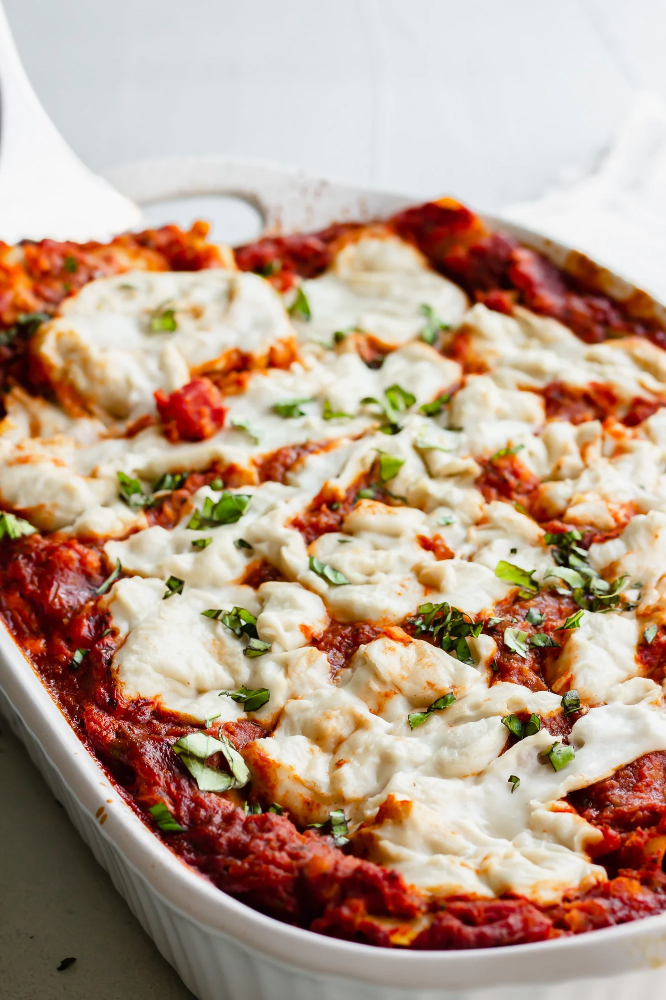

Vegan Lasagna

The ultimate comfort food! This lasagna can be topped with vegan mozzarella (scroll past lasagna recipe for instructions) or a double batch of vegan ricotta.
This recipe and photo are property of Nora Cooks and have been republished here for educational purposes only. Be sure to check out her website for more great recipes!
Ingredients
- 1 cup dried red lentils
- (2) 25-ounce jars marinara sauce
- 1 cup raw cashews
- 14.5 ounce firm tofu patted dry
- 1/2 cup nutritional yeast
- 3 tablespoons fresh lemon juice from about 2 lemons
- 1 teaspoon salt
- 1 teaspoon dried basil
- 1 teaspoon oregano
- 1/2 teaspoon garlic powder
- 3 cups baby spinach
- 1 box lasagna noodles (about 12 noodles) regular, gluten free or whole grain
- Double recipe Easy Vegan Mozzarella Cheese or 2-3 cups shredded vegan mozzarella
Directions
- Cook the red lentils. Add 1 cup dried red lentils and 3 cups of water to a medium pot. Bring to a boil, and then simmer for about 20 minutes. Drain the lentils in a fine strainer, and then add back to the pot and stir in the marinara sauce. Set aside.
- Preheat the oven to 350 degrees.
- Make the Cashew-Tofu Ricotta: Add the cashews to a food processor and process until fine and crumbly. Then add the tofu in chunks, nutritional yeast, lemon juice, salt, basil, oregano and garlic powder to the food processor. Pulse until well combined and pretty smooth. If it's too thick, add a few tablespoons of water to blend. Set aside.
- Assembling the lasagna: Add about 1 cup of lentil marinara to the bottom of a large 9×13 inch casserole dish. Spread it around evenly. Next add 4-5 lasagna noodles (uncooked). Spread half of the ricotta on top of the noodles. Top with half of the spinach. Add about 1 cup of the marinara sauce over the spinach, then place 4-5 lasagna noodles on top. Spread the rest of the ricotta over the noodles, then the rest of the spinach. Place 4-5 more noodles on top of the spinach, and then pour the rest of the sauce over the top, evenly.
- Cover tightly with foil and bake for 40 minutes.
- While the lasagna is cooking, make your Vegan Mozzarella Cheese, if using. Alternatively, use 2-3 cups store bought vegan mozzarella cheese.
- After 40 minutes, remove the foil and spoon on the mozzarella (or sprinkle the cheese all over). Place the lasagna back in the oven and bake for 20 more minutes, uncovered.
- Remove from oven, let cool for at least 15 minutes and serve.
Leftover lasagna will keep for about 4 days in the refrigerator. See notes for freezing instructions.
Vegan Mozzarella
Ingredients
- 1/2 cup raw cashews, soaked
- 1 1/3 cups water
- 1 tablespoon lemon juice, fresh from about 1/2 lemon
- 1 tablespoon apple cider vinegar
- 1/2 teaspoon salt
- 4 tablespoons tapioca starch
Directions
- Boil 2 cups of water (I just heat up water in my tea kettle). Pour the water over the cashews and let soak for 5 minutes and up to an hour.
- Drain the cashews, and add them to a blender along with 1 1/3 cups fresh water (not the water you soaked the cashews in), lemon juice, apple cider vinegar, salt and tapioca starch. Blend until very smooth, scraping down the sides of the blender as needed. It will be very watery at this point.
- Now pour the watery mixture into a small saucepan and bring the heat to medium. Begin to stir with a spatula or spoon.
- After a few minutes, it will begin to get clumpy. Keep stirring, constantly until suddenly it will become super gooey, stretchy, thick and smooth. It will become one big mass of stretchy vegan cheese. Remove from heat as soon as this happens.
- Use immediately, or store in a covered container in the refrigerator. It is easiest to use immediately, because it will thicken up more in the fridge and be less stretchy. So if possible, especially for using on pizza or lasagna, make right before using.
For pizza, drop 1-2 tablespoon sized balls onto the crust and pat down a little bit. Or spread it all over. It will brown in the oven. For lasagna, drop dollops of the cheese all over the top towards the end of cooking time. Or place between bread and grill for grilled cheese.